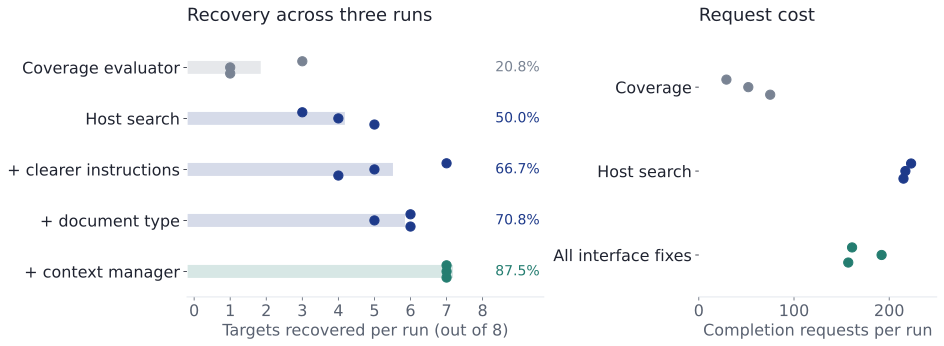
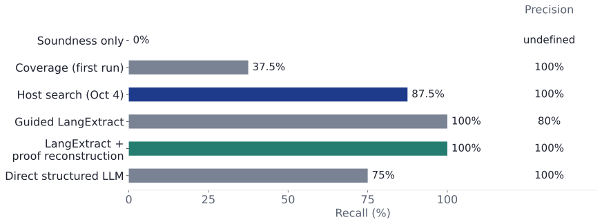

Research progress update
Checking whether extracted relations
follow from their sources
Dat Nguyen
August to October 2026
Research roadmap
Task and terms
Drug A does not inhibit Gene B in assay X.
<subject, predicate, object>
<Drug A, inhibits, Gene B>
This tuple is the relation. A claim adds polarity and context:
| Polarity | Positive or negative: here, NOT this relation. |
|---|---|
| Context / qualifier | A condition: assay = X. An assay is a laboratory test. |
| Evidence | The supporting quotation: the full sentence above. |
Claim: NOT <Drug A, inhibits, Gene B>, assay = X
Source support
A proof records how source evidence and declared interpretation rules justify a claim. Read this illustrative tree from top to bottom; hover or Tab to a node for details.
The problem
Drug A does not inhibit Gene B in assay X.
Suppose an extractor quotes this sentence exactly, but returns:
POSITIVE <Drug A, inhibits, Gene B>, assay = X
| Question | Result for this example |
|---|---|
| Does the quotation occur in the source? | Yes. Every quoted character matches. |
| Does the source support the claim? | No. “Does not inhibit” contradicts the positive claim. |
Source support means the claim follows from the cited text. Here, we must keep NOT, Drug A as subject, Gene B as object, and assay X.
A worked example
Drug A does not inhibit Gene B in assay X.
Supported: NOT <Drug A, inhibits, Gene B>, assay = X
| Change one part of the claim | Why the source does not support it |
|---|---|
| Replace NOT with POSITIVE | “Not” states the opposite polarity. |
| Swap Drug A and Gene B | Drug A is the subject; Gene B is the object. |
| Replace assay X with assay Y | The sentence only mentions assay X. |
| Remove the assay condition | A result in assay X does not establish an unrestricted claim. |
Each row changes only the indicated part; the quoted evidence stays identical. The checks must connect that evidence to every part of the claim.
October 5, 2026
Drug A does not inhibit Gene B in assay X.
A Context contains facts and operators. The assay X fact states a condition; the NOT operator negates the claim. negate returns a new Context containing both.
Context returned by negate and passed to E₁:
E₁ returns: NOT <Drug A, inhibits, Gene B>, assay = X
Program synthesis
An Extractor is a program like extract below, proposed by a large language model (LLM). A Context keeps the condition and polarity: here, assay X and NOT.
Actual implementation at 5c43bda
Illustrates extract_negative. The actual function takes a key (str), retrieves CertifiedDoc, and returns list[Relation]. Document and Claim are slide aliases. assay_scope combines assertion_ref, resolve_context_value and ContextScope; negate(doc, ...) abbreviates the assertion reference. The real example uses block/Gene C; the slide uses inhibit/Gene B with the same checks.
examples/negation_demo.py · extract_negative · lines 218-232
def extract_negative(key: str) -> list[Relation]:
doc = retrieve(key)
assertion = assertion_ref(doc)
assay = resolve_context_value(find_span(doc, "assay X"), ASSAY, ASSAY_X)
with ContextScope(assertion, (assay,)):
context = negate(assertion=assertion, cue=find_span(doc, "not"))
return [
make_relation(
find_span(doc, "Drug A"),
refine_relation(find_span(doc, "block"), "inhibits"),
find_span(doc, "Gene C"),
find_span(doc, "Drug A does not block Gene C in assay X."),
context=context,
)
]def extract(doc: Document) -> list[Claim]:
with assay_scope(doc, "assay X"):
context: Context = negate(doc, cue=find_span(doc, "not"))
return [make_relation(
find_span(doc, "Drug A"),
refine_relation(find_span(doc, "inhibit"), "inhibits"),
find_span(doc, "Gene B"),
find_span(doc, doc.text),
context=context,
)]extract(doc1) → [NOT <Drug A, inhibits, Gene B>, assay = X]
Conceptual Python: find_span retains each quote's location; refine_relation checks the declared verb form. assay_scope checks and attaches “assay X”; negate keeps it with “not.”
Running the program
Drug A does not inhibit Gene B in assay X.
Policy sets the rules and limits: preserve the source's roles, NOT and assay X; allow no text edits. Budget records edit use: this program has spent=0, limit=0.
| Proposed program | Checked result | Next step |
|---|---|---|
extract(doc1)Keeps NOT and assay X | Accepted: the negative claim, its proof, context and edit use | Synthesis returns the accepted function extract |
| A revised version Drops NOT | Refusal: the check fails because the source says “does not inhibit” | Give that reason to the model and request another program |
Failure means the search ends without an accepted program. For example, all 32 allowed model calls are used without a passing result.
Illustrative outcomes for the same sentence. Predicate refinement and source-backed negation use no text-edit budget.
The approach
A callable is a function: synthesis returns extract; calling extract(doc1) returns claims. Callable[[Document], list[Claim]] describes that input and output.
Actual implementation at 5c43bda
The real synthesis signature returns a callable validated by accept_candidate. propose represents the Skill-generated candidate; execute_and_check summarizes record/execute. Each execution installs a fresh KeepTrackHandler with corpus and policy. requests_remain summarizes the recorded_requests cap; Failure summarizes exhausted retries or request-limit exceptions. The real callable takes a key (str) and returns list[Relation]; the slide uses Document and Claim.
examples/checked_experiment.py · run_checked.accept_candidate · lines 298-300
def accept_candidate(run: RelationExtractorCallable) -> RelationExtractorCallable:
record(run, submitted=True)
return runexamples/checked_experiment.py · run_checked.synthesize_extractor · lines 302-334
@Skill.define
def synthesize_extractor(
source: str, instructions: str, evaluator: CoverageEvaluator
) -> Annotated[RelationExtractorCallable, AfterValidator(accept_candidate)]:
"""
Extract every unconditional atomic relation from {source}.
Task instructions: {instructions}
Return an extract(key: str) -> list[Relation] callable. Build it from the
operations in scope (retrieve, find_span, refine_relation, make_relation,
assertion_ref, resolve_context_value, ContextScope, current_context,
negate, add, delete, replace); read their docstrings with help() in
exec_code. Put all operation calls, including any ContextScope, inside
extract and pass its key to retrieve. Do not call the parser or read
corpus internals. Return [] if no unconditional relation is asserted.
Maximize the objective of this evaluator, which is in scope as
`evaluator`: {evaluator}
Score candidates with evaluator.evaluate(extract) in exec_code, and return
your best evaluated extractor.
This is one sentence. Specialize the extractor to the source argument;
no general sentence splitting or parser implementation is needed.
Retain every stated qualifier; missing context stays unknown. Negation must
concern the whole atomic assertion. Absence of evidence, hedges, and
unresolved scope cannot supply a negative claim. Evidence is the complete
sentence as one span. The predicate span contains only the lexical verb,
excluding auxiliaries and negation. Preserve argument order, polarity and
context. Acceptance executes the returned extractor with a fresh host
budget.
"""
raise NotHandledexamples/checked_experiment.py · run_checked.record · lines 288-296
def record(run: RelationExtractorCallable, *, submitted: bool) -> AnswerReport:
attempt, error = execute(
run, corpus=corpus, policy=policy, key=key, submitted=submitted
)
attempts.append(attempt)
if error is not None:
# The re-raised exception is how the Skill rejects the candidate.
raise error
return attempt.reportfrom collections.abc import Callable
type Extractor = Callable[[Document], list[Claim]]
def synthesize(source: Document, policy: Policy) -> Extractor | Failure:
feedback: Refusal | None = None
while requests_remain(policy):
program: Extractor = propose(source, policy.operations, feedback)
budget: Budget = fresh_budget(policy)
result: Accepted | Refusal = execute_and_check(program, source, policy, budget)
if isinstance(result, Accepted):
return program
feedback = result
return Failure()Soundness requires source support, so dropping “not” fails; an empty answer can pass. The check validates this execution on doc1.
September 28 to 29, 2026
An Edit records a text change. Here, add creates an AdditionEdit that appends a period after “Gene B.” A Span is a source slice; an EditedSpan retains that slice and its edit.
Example budget: 1 addition unit and 1 total edit unit per execution. Each addition costs 1.
Actual implementation at 5c43bda
Illustrative typed use of the real add operation inside an installed KeepTrackHandler. The host policy permits (Gene B, period, after), prices add at 1, and sets edit.add=1 and edit=1. add creates an AdditionEdit and returns EditedSpan only after charging both budgets. The first value is discarded here; the second call still exceeds the budget. Based on test_refused_charge_is_atomic_and_preserves_prior_spending.
keeptrack/ops.py · KeepTrackHandler._add · lines 367-391
@implements(add) # type: ignore[untyped-decorator]
def _add(
self,
span: Span,
anchor: str,
added: str,
*,
position: Literal["before", "after"] = "after",
occurrence: int | None = None,
) -> EditedSpan:
parent = self.admitted(span)
edit = AdditionEdit(
anchor=anchor,
added=added,
position=position,
occurrence=occurrence,
)
step = edit._validate(self.policy)
result = EditedSpan(parent=span, edit=edit, context=self._scope(span))
proof = evolve(
parent, rendered_surface=result.surface, chain=(*parent.chain, step)
)
self.spend("edit.add", self.policy.edit_costs.add)
self.proofs[id(result)] = (result, proof)
return resultkeeptrack/ops.py · KeepTrackHandler.spend · lines 222-237
def spend(self, key: str, cost: int) -> None:
charges = {key: cost}
if "edit" in self.policy.budgets:
charges["edit"] = cost
prospective = {
category: self.spent.get(category, 0) + charge
for category, charge in charges.items()
}
for category, used in prospective.items():
limit = self.policy.budgets.get(category, 0)
if used > limit:
raise ValidationProblem(
f"edit budget exceeded for {category}: {used}/{limit}",
stage="lexical",
)
self.spent.update(prospective)def add_period_twice(evidence: Span) -> EditedSpan:
first: EditedSpan = add(evidence, "Gene B", ".")
second: EditedSpan = add(evidence, "Gene B", ".")
return second| Operation | Example and outcome | Spent / limit |
|---|---|---|
| Normalization: approved equivalent predicate. | blocks → inhibits for Drug A/Gene B in assay X. The equivalence rule declares that meaning is preserved. In assay Y, keep blocks. | 0 / 1 |
| First addition | “Drug A blocks Gene B” → “Drug A blocks Gene B.” Returns an EditedSpan. | 1 / 1 |
| Second addition to the original source | Refusal: would spend 2 / 1; no value returned. | Still 1 / 1 |
Proofs retain source words and rules. Discarded edits still cost; each execution gets a fresh budget.
Recorded examples: empty answers
Drug A inhibits Gene B in assay X.
Expected: <Drug A, inhibits, Gene B>, positive, assay X. In the actual program, Relation represents a claim with its context; key identifies the source document.
Verbatim generated program
The slide shows its nested extract function, dedented. The complete submitted program below comes from runs.direct.requests[1].response.choices[0].message.tool_calls[0].function.arguments, decoded as JSON, then implementation.code. Escaped line breaks are rendered as newlines. Relation is the actual runtime claim type.
Recorded submission · direct · line 8927
from collections.abc import Callable
def synthesize_extractor(source: str, instructions: str) -> Callable[[str], list[Relation]]:
def extract(key: str) -> list[Relation]:
return []
return extractdef extract(key: str) -> list[Relation]:
return []| Source | Submitted extractor |
|---|---|
| The direct assertion above | Returns [] from its first submission. |
| Drug A blocks Gene B in assay Y. | Proposes “Gene B in assay Y” as the object; after rejection, the next extractor returns []. |
Both final reports pass with ok = True, zero relations and no errors. Both sentences still have a positive claim to extract: the checks accept an empty answer.
October 1, 2026
Drug A does not inhibit Gene B in assay X.
A provenance tree links a checked claim to the source words supporting it. Here, its leaves identify the subject, predicate, object, qualifier and negation cue. A token is one word: “Drug A” has two.
Coverage = (2 + 1 + 2 + 2 + 1) / 10 = 0.80
If only “assay X” is grounded as context, coverage is (2 × 0.5) / 10 = 0.10. With neither a relation nor grounded context, coverage is 0.
October 1, 2026
P is a proposed extractor; d is one source sentence. C(P, d) is its checked word coverage, e.g., 7/8 for our positive Drug A/Gene B sentence. u(P, d) is the cost of permitted transformations of source-derived text, e.g., an addition charged 1 unit. B > 0 is the allowance: spending 1 unit from B = 2 uses half.
arg max selects a program with the largest score. 𝒫Accepted contains submitted programs that pass source checks and all edit limits. λ sets the cost penalty; PR #13 uses λ = 0.5.
| Illustrative accepted proposal | Coverage C | Cost u, with B = 2 | C − 0.5 u / B |
|---|---|---|---|
| P₁: no paid edit | 0.60 | 0 | 0.60 ← selected |
| P₂: one approved paid edit | 0.80 | 1 | 0.55 |
The controlling Python program asks the model for six extractor proposals, scores each with a fresh edit budget, and selects the highest-scoring passing submission. A Refusal scores −1.5. This search gives no global optimality guarantee; the table is illustrative.
Alternative formulation
Keep the same checked programs and cost units. Treat B as a hard spending cap, and select the program with the greatest coverage.
| Same illustrative proposals | Eligible programs | Selected program |
|---|---|---|
| B = 0: no paid edits | P₁ only | P₁: coverage 0.60 |
| B = 1: allow one cost unit | P₁ and P₂ | P₂: coverage 0.80 |
At B = 2, this formulation still selects P₂. The weighted objective with λ = 0.5 selects P₁: the extra 0.20 coverage does not offset the 0.25 penalty.
The recorded coverage-first method (PR #12) lets the model call the evaluator when it chooses; it selects the passing proposal with greatest coverage, breaking ties by lower spending. The host-search method instead forces six proposals with the weighted score. The hard-cap comparison above is illustrative and was not run.
Experiment settings · Dataset and inclusion criteria
We authored controlled contrasts: change the verb, polarity, roles or assay to test what must stay supported. The declared synonym rule equates blocks with inhibits only for a Drug subject and Gene object in assay X.
| Source sentence | Selection criterion / expected answer |
|---|---|
| Drug A inhibits Gene B in assay X. | Direct assertion: extract the positive claim. |
| Drug A blocks Gene B in assay X. | Synonym: either supported verb gets credit. |
| Drug A does not block Gene C in assay X. | Negation: preserve NOT and Gene C. |
| Drug A does not block Gene B in assay X. | Conflicting sources: this claim stays negative even though another source is positive. |
| Drug A never inhibits Gene B in assay X. | Another negative form: preserve NOT. The revised sentence-pattern rules added support for “never.” |
The first September 14 notebook had seven sources. Later that day it added reversed roles, “may” and “never,” giving ten. These five sources each have one target meaning. Notebook history
Experiment settings · Dataset and inclusion criteria
Abstention means returning no claim, []. A failed synonym condition still permits the original blocks relation when the source asserts it.
| Source sentence | Selection criterion / expected answer |
|---|---|
| There is no evidence that Drug A blocks Gene D in assay X. | Absence of evidence supports neither polarity: return []. |
| Drug A may inhibit Gene B in assay X. | Possibility is not an unconditional claim: return []. |
| Truck T blocks Road R in assay X. | Entity types: keep blocks; the synonym rule is for Drug/Gene. |
| Gene B blocks Drug A in assay X. | Argument roles: keep Gene B as subject and blocks as predicate. |
| Drug A blocks Gene B in assay Y. | Assay context: keep blocks and assay Y; the rule requires X. |
Together: eight target meanings and two expected empty answers. The grammar (allowed sentence patterns), entity types and synonym rule are supplied premises. This is not a held-out biomedical benchmark.
Experiment settings · Scoring
A reference is an independently authored correct claim. Approved blocks/inhibits spellings recover the same target once. Labels are kept outside the model-facing synthesis module.
| Complete match | Our negative relation, assay X, doc1 and its full quotation all agree. |
|---|---|
| Precision | Correct / returned: e.g., 6 correct of 6 returned = 100%. |
| Recall | Recovered / references: e.g., 6 recovered of 8 targets = 75%. |
| Exact document | The whole answer agrees: e.g., the one complete claim for doc1, with no extras. |
A baseline is a comparison method, here the LangExtract LLM extraction library. “Guided” supplies rules and examples such as our blocks/inhibits rewrite. “+ proof reconstruction” adds a Keep Track adapter that checks its proposals, for example refusing a dropped “not,” and constructs proofs for those that pass.
October 4, 2026

with install the qualifier scope. All listed runs emit zero incorrect relations. These sequential runs do not isolate each change's effect.Baseline: LangExtract + proof reconstruction
Drug A blocks Gene B in assay X.
LangExtract is an LLM extraction library and a comparison method here. Proof reconstruction takes its proposed fields and checks their support using Keep Track’s rules, e.g., whether “blocks” permits “inhibits.”
A wrong role, unsupported synonym, missing qualifier or polarity mismatch prevents proof reconstruction. The same Keep Track checks also apply to synthesized extractors.
October 4, 2026
“Direct structured LLM” asks for fixed fields, e.g., {subject: "Drug A", predicate: "inhibits", ...}, without generating an extractor. These October runs use gpt-5.4-mini.

Keep Track checks LangExtract's proposed claims and produces proofs for those that pass. Synthesis additionally produces an executable extractor and supports revision from refusals; these results do not establish a quality advantage over the fully checked baseline.
Proposed extension: one extractor across documents
Let D = {d₁, …, dₙ} be n source documents, e.g., a positive Drug A/Gene B sentence, a negative Drug A/Gene C sentence, and “Drug A may inhibit Gene B in assay X.” Run the same P on all three.
1/n ∑ averages coverage across documents. ∀i means every document has its own cap Bᵢ. Accepted on D requires all executions to pass; returning no claim on “may inhibit” remains valid.
This maximizes average word coverage. Counting correctly recovered examples is a separate evaluation using reference answers: for instance, recover both supported claims and abstain on the uncertain third sentence.
Proposed aggregate objective, not an implemented result. The existing plan keeps coverage and spending separate for each document. PR #13 currently searches for a different program per source.
Research questions ahead
We have executable checks and source-support proofs for declared sentence patterns, such as “A inhibits B in assay X.” The current evidence does not yet establish a general extraction advantage.
Appendix: notebook revisions
| Notebook version | What changed |
|---|---|
| September 14: authored examples | Seven sources, checker proofs, no model calls. |
| September 14: ten-source study | Add reversed roles, “may” and “never,” plus a recorded structured LLM baseline. Actual LangExtract follows that day. |
| September 15: grammar and scoring v2 | Accept “never”; require complete quotations from the correct document. Keep old v1 outputs separate. |
| September 30: new recorded study | GPT-5.4 mini replaces GPT-4.1 mini; the synthesis prompt changes too. Soundness-only acceptance recovers 0/8. |
| October 1: coverage and host search | Add two experimental conditions on the same ten sources. |
| October 4: comparison notebook | Compare the September and October studies; model, prompts, interfaces and compute differ. |
| October 5 to 6: scoped, typed examples | Update program examples for scoped negation and typed context values. The source set stays unchanged. |
Dates identify committed notebook revisions, not every run's collection time. A fixed sentence set does not isolate the effect of each method change. Back to the ten sentences